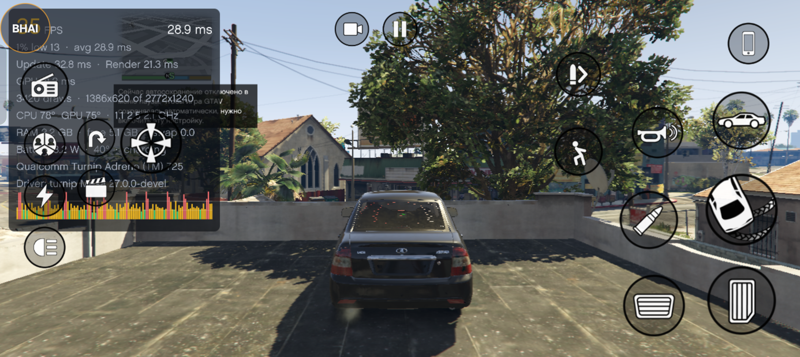
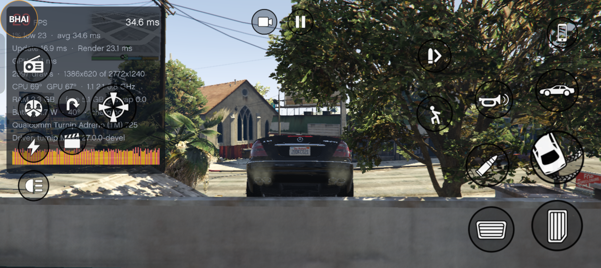
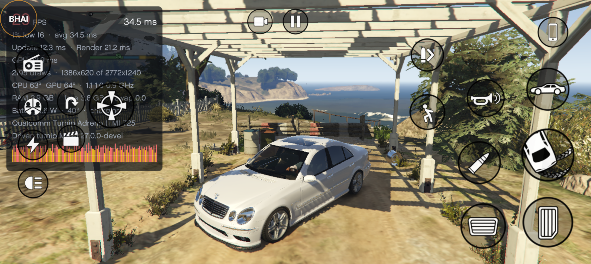
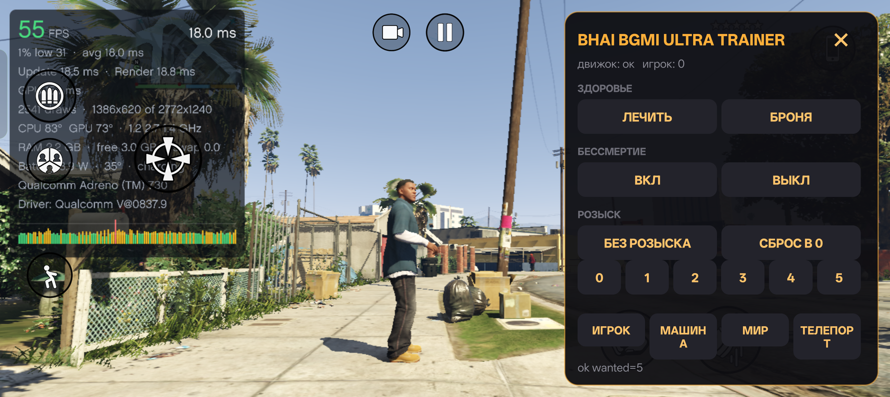

Полноценный загрузчик модов с поддержкой папки mods/ без изменения исходных архивов игры и плавающим внутриигровым трейнером Bhai Ultra Trainer. Ваши оригинальные файлы игры никогда не повреждаются!
Полноценный внутриигровой оверлей, вдохновленный PC-трейнерами вроде Menyoo, доступный прямо во время игры в один тап.
Полный доступ ко всем оригинальным и добавленным транспортным средствам с мгновенным спавном перед игроком или сразу за рулем.
Полная неуязвимость и максимальные боевые возможности для комфортного исследования открытого мира.
Тонкое управление атмосферой Лос-Сантоса: меняйте погодные эффекты и время суток прямо на лету.
Моментальное перемещение в любую точку штата Сан-Андреас пешком или прямо вместе с автомобилем.
Разработан специально под архитектуру Android 11–15+ с изоляцией процессов и полным соответствием стандартам OpenIV.
Больше никаких рут-прав, патчей ядра или опасности окирпичить телефон. Всё управление правами и процессами выполняется через защищённый сервис Shizuku (UID 2000).
Нативная библиотека libopeniv.so перенаправляет запросы игры в изолированную папку mods/. Оригинальный файл update.rpf никогда не перезаписывается.
Встроенный конструктор собственного списка машин. Вводите название и код модели (Granta, Priora, Mercedes E55) — машина сохраняется навсегда и спавнится одним нажатием.
Плавающая кнопка поверх экрана: 16 категорий транспорта, поиск по названию, мгновенный ремонт авто, переворот на колёса, бессмертие, оружие и телепорт по GPS.
Вам больше не нужен компьютер для распаковки или редактирования файлов: просматривайте дерево файлов RPF архивов и редактируйте XML/META прямо на смартфоне.
При обычном запуске GTA V со смартфона игра всегда остаётся 100% чистой и оригинальной. Моды и оверлей подключаются только при запуске через OpenIV Loader.
Скриншоты заспавненных аддон-машин и открытого меню трейнера на мобильном порте GTA V.




Полное руководство по подготовке DLC архивов, настройке папки mods/ и спавну любых машин в GTA V Android.
Установите официальное приложение Shizuku (из Google Play или GitHub). На Android 11+ запустите его прямо со смартфона через «Беспроводную отладку» (Wireless Debugging) по Wi-Fi. Нажмите в Shizuku кнопку «Запустить».
Скачайте и установите OpenIVLoader.apk. При первом открытии нажмите «Запросить доступ Shizuku» и выберите «Разрешать всегда». Выдайте разрешение «Отображение поверх других приложений» для работы оверлея трейнера.
Скачайте архив любой машины (например, с сайта GTA5-Mods). Откройте файл dlc.rpf (через встроенный в лоадер RPF Редактор или OpenIV на ПК) и переименуйте внутреннюю папку:
Затем в файле dlclist.xml (расположенном внутри mods/update/update.rpf/common/data/) добавьте строчку с именем авто: <Item>dlcpacks:/delorean/</Item>.
В любом файловом менеджере (ZArchiver) создайте папку mods рядом с файлами игры и поместите архив машины в каталог: mods/update/android/dlcpacks/<имя_машины>/dlc.rpf. Важно: имя папки (например, delorean) должно точно совпадать с записью в dlclist.xml!
mods/ ├── update/ │ ├── update.rpf (dlclist.xml) │ └── android/dlcpacks/ │ ├── delorean/dlc.rpf (папка совпадает с dlclist.xml) │ └── benze55/dlc.rpf (x64 переименован в android) └── common.rpf
В приложении OpenIV Loader перейдите в раздел «⚙️ Настройки» и нажмите кнопку «🔑 Исправить права (chmod 777 на mods/)». Shizuku выдаст полный доступ игре к чтению скопированных файлов.
Android/data/com.thegwchr.fuzzy. Если ваша игра расположена в общедоступной папке (например, /storage/emulated/0/games/gta5/game/), права исправлять не требуется!
В OpenIV Loader нажмите «Включить моды и запустить игру». После загрузки GTA V коснитесь плавающей кнопки BHAI ➔ вкладка МАШИНА ➔ нажмите «➕ УПРАВЛЕНИЕ СПИСКОМ МАШИН», введите название и код модели (например delorean). Нажмите на машину — она мгновенно появится перед вами!
Да, на 100%! Лоадер использует системный сервис Shizuku, который исполняет команды с правами привилегированного пользователя Android Shell (UID 2000). Это абсолютно безопасно, не требует разблокировки загрузчика и не ломает Knox/банковские приложения.
Нет. Нативная библиотека перенаправляет вызовы только во время работы лоадера. Сам файл update.rpf на диске не перезаписывается. Если запустить GTA V обычным ярлыком с экрана — запустится чистая оригинальная игра.
Список сохраняется во внутреннем хранилище SharedPreferences приложения и синхронно экспортируется в текстовый файл: /sdcard/Android/data/com.thegwchr.fuzzy/files/game/custom_vehicles.txt. Вы можете редактировать его в любом блокноте!
Да! Движок GTA V обращается к игровым ресурсам по относительным путям. Поэтому если рядом с вашей рабочей папкой игры находится папка mods/, все модификации автоматически подхватываются независимо от пути.
Да, на 100%! Любая Add-On машина, созданная для ПК, полностью совместима с мобильным портом GTA V. Главное обязательное условие: внутри файла dlc.rpf переименуйте внутреннюю папку x64 в android, скопируйте архив в mods/update/android/dlcpacks/<имя>/dlc.rpf и пропишите имя в dlclist.xml.
Скачивайте новейшую версию OpenIV Loader & Bhai Ultra Trainer и наслаждайтесь любимыми модами прямо сейчас.
Скачать OpenIVLoader.apk (v2.4)